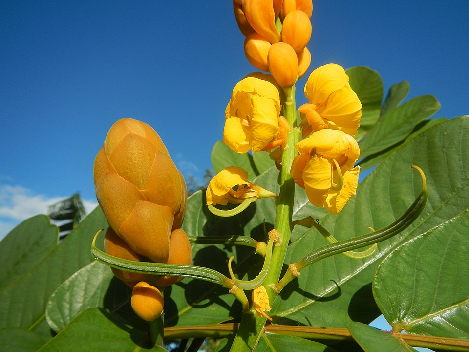
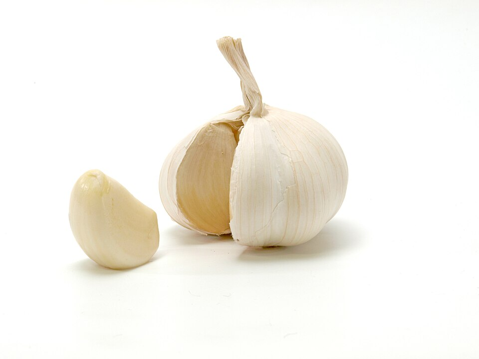
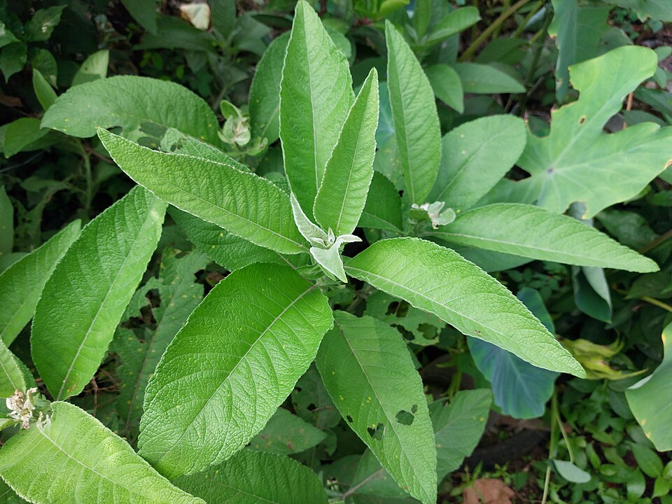
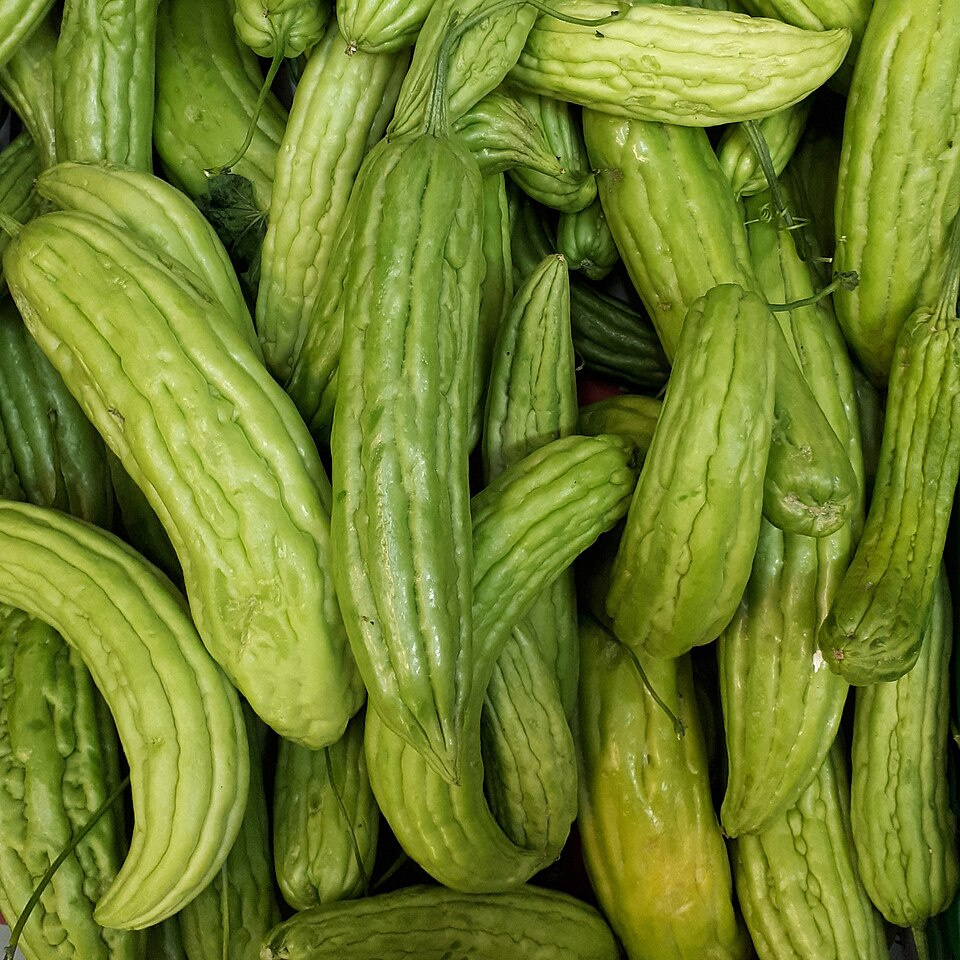
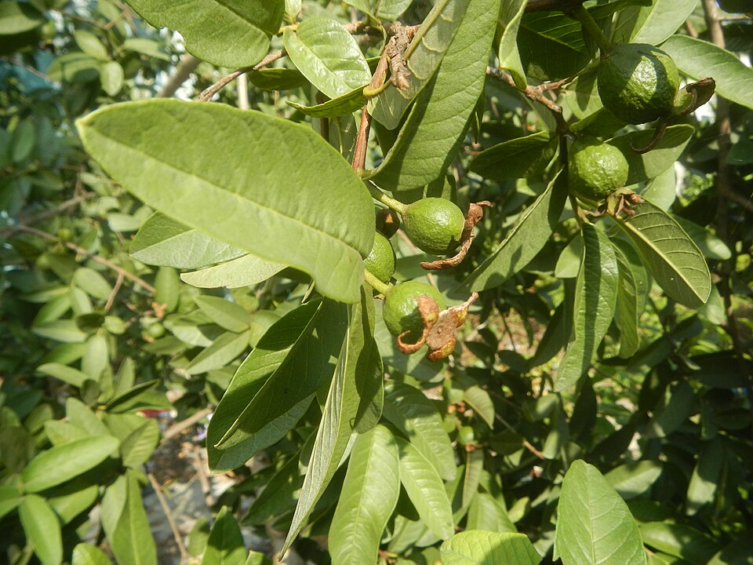
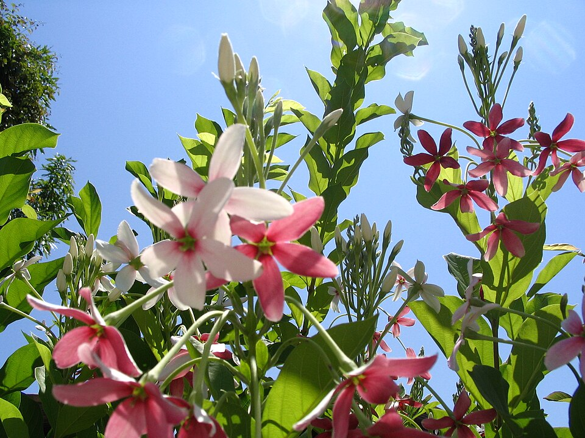
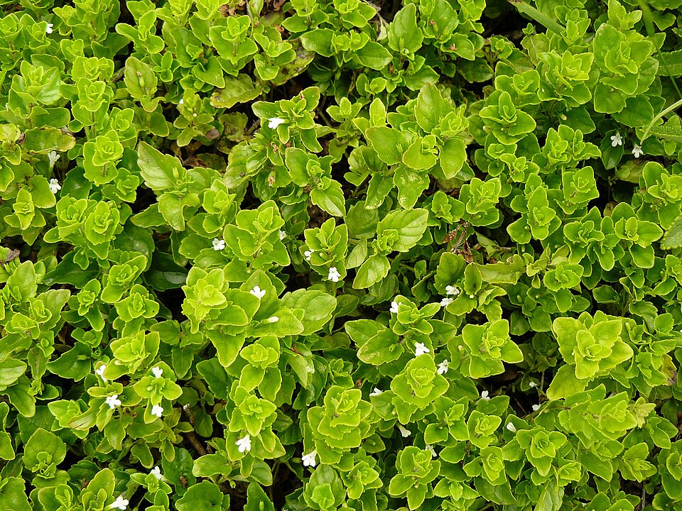

Lagundi (Vitex negundo)
✉️Description
Lagundi (scientific name: Vitex negundo) is a medicinal shrub commonly used in traditional Filipino herbal medicine. It is recognized by the Department of Health (Philippines) as one of the approved herbal plants for treating cough and respiratory conditions.
🌿 Appearance
Lagundi is a small shrub or tree that grows about 2–5 meters tall. It has five-pointed leaves, a distinct herbal smell, and produces small violet or bluish flowers.
📍 Location
It commonly grows in tropical areas, especially in the Philippines, as well as in South and Southeast Asia. It is often found in gardens, roadsides, and open fields.
⚕️ Medicinal Properties
Lagundi has anti-inflammatory, antibacterial, and bronchodilator properties, which help reduce inflammation and open the airways.
🩺 Specific Illness or Symptoms
Cough, Asthma, Fever, Sore throat, Mild respiratory infections
💊 How to Prepare
⭐Lagundi tea/decoction: Boil about 5–7 fresh leaves in 2 cups of water for 10–15 minutes, then drink when warm.
⭐Syrup or tablets: Commercial lagundi medicines are also available.

Akapulko (Senna alata)
✉️Description
Akapulko (scientific name: Senna alata) is a medicinal plant recognized by the Department of Health (Philippines) for treating fungal skin infections.
🌿 Appearance
A shrub with large green leaves and bright yellow candle-like flowers.
📍 Location
Common in tropical areas, especially in the Philippines.
⚕️ Medicinal Properties
Akapulko has antifungal, anti-inflammatory, and antimicrobial properties, which help treat fungal skin infections.
🩺 Specific Illness or Symptoms
Ringworm, athlete’s foot, and other fungal infections.
💊 How to Prepare
⭐Crush fresh leaves and apply the leaf extract directly on the affected skin.

Garlic (Allium sativum)
✉️Description
Garlic (scientific name: Allium sativum) is a widely used herb known for its medicinal and culinary uses.
🌿 Appearance
A bulb plant with white cloves wrapped in thin skin.
📍 Location
Cultivated worldwide including the Philippines.
⚕️ Medicinal Properties
Garlic has anti-inflammatory, antibacterial, and cardiovascular properties, which help reduce inflammation and support heart health.
🩺 Specific Illness or Symptoms
High blood pressure, infections, and high cholesterol.
💊 How to Prepare
⭐Eat raw crushed garlic or add it to food

Sambong (Blumea balsamifera)
Sambong (Blumea balsamifera) is a flowering plant native to the Philippines. It is one of the ten herbal medicines endorsed by the Philippine Department of Health (DOH) for safe and effective use. Sambong is commonly used for the treatment of kidney stones and urinary tract infections. It has been traditionally used as a diuretic. Studies have shown that Sambong has diuretic, anti-inflammatory, and antimicrobial properties.

Ampalaya (Momordica charantia)
Ampalaya (Momordica charantia) is a vine plant native to the Philippines. It is one of the ten herbal medicines endorsed by the Philippine Department of Health (DOH) for safe and effective use. Ampalaya is commonly used for the management of diabetes mellitus. It has been traditionally used to lower blood sugar levels. Studies have shown that Ampalaya has hypoglycemic and antioxidant properties.

Bayabas (Psidium guajava)
Bayabas (Psidium guajava) is a tropical tree native to the Philippines. It is one of the ten herbal medicines endorsed by the Philippine Department of Health (DOH) for safe and effective use. Bayabas is commonly used for the treatment of diarrhea and gastroenteritis. It has been traditionally used as an antidiarrheal agent. Studies have shown that Bayabas has antimicrobial and antidiarrheal properties.

Philippine Tea Tree (Ehretia microphylla)
Philippine Tea Tree (Ehretia microphylla) is a deciduous tree native to the Philippines. It is one of the ten herbal medicines endorsed by the Philippine Department of Health (DOH) for safe and effective use. Philippine Tea Tree is commonly used for the treatment of skin infections and as an insecticide. It has been traditionally used for its antimicrobial and insecticidal properties. Studies have shown that Philippine Tea Tree has antimicrobial and insecticidal properties.

Niyug-niyogan (Combretum indicum)
Niyug-niyogan (Combretum indicum) is a vine plant native to the Philippines. It is one of the ten herbal medicines endorsed by the Philippine Department of Health (DOH) for safe and effective use. Niyug-niyogan is commonly used for the treatment of intestinal parasites. It has been traditionally used as an anthelmintic. Studies have shown that Niyug-niyogan has antiparasitic properties.

Yerba Buena (Clinopodium douglasii)
Yerba Buena (Clinopodium douglasii) is an aromatic herb native to the Philippines. It is one of the ten herbal medicines endorsed by the Philippine Department of Health (DOH) for safe and effective use. Yerba Buena is commonly used for the relief of pain, headache, and rheumatism. It has been traditionally used as an analgesic. Studies have shown that Yerba Buena has analgesic and anti-inflammatory properties.

Ulasimang Bato (Peperomia pellucida)
Ulasimang Bato (Peperomia pellucida) is a shrub native to the Philippines. It is one of the ten herbal medicines endorsed by the Philippine Department of Health (DOH) for safe and effective use. Ulasimang Bato is commonly used for the treatment of wounds, skin infections, and as an antidote for scorpion stings. It has been traditionally used for wound healing. Studies have shown that Ulasimang Bato has antimicrobial and wound-healing properties.